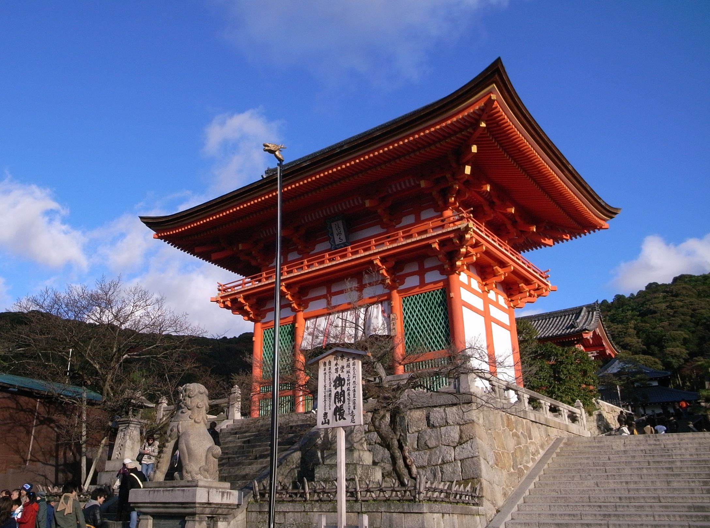
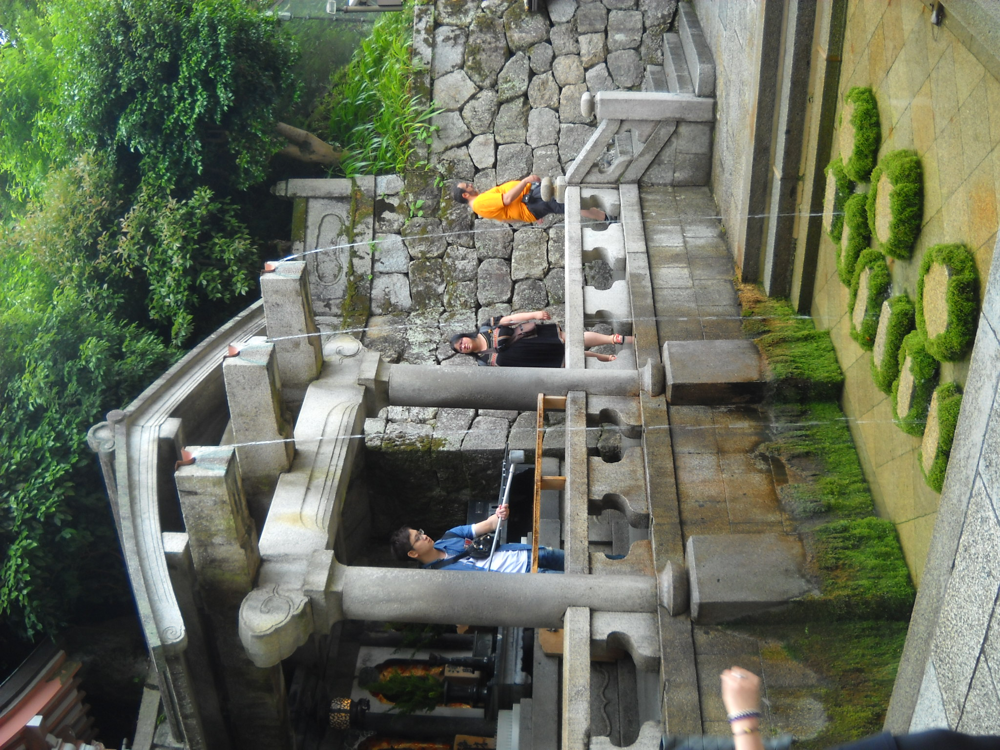

本堂と京都のまち / Jordy Meow /
CC BY-SA 3.0・出典
本堂と舞台
ほんどう・ぶたい木の建物と、京都の景色。
本堂の前には、木でできた広い舞台があります。建物の向こうに、京都のまちと木々が広がります。
本堂はお参りをする場所です。風景を見るときも、周りの人に気をつけましょう。
建物
木の建物、赤い門、流れる水。気になったところから読んでみましょう。
この順番は、必ず歩く順番や正式な見学ルートではありません。
3か所を表示しています。
木の建物と、京都の景色。
本堂の前には、木でできた広い舞台があります。建物の向こうに、京都のまちと木々が広がります。
本堂はお参りをする場所です。風景を見るときも、周りの人に気をつけましょう。
建物
入口で出会う、赤い門。
仁王門は、清水寺の正面の入口にある門です。赤い柱と、大きな屋根が目に入ります。
門の全体を見てから、屋根の形や色にも目を向けてみましょう。
建物
名前につながる、水の風景。
音羽の滝では、水が三つに分かれて流れています。清水寺という名前は、この水に関係しています。
ここもお参りの場所です。見学するときは、その日の案内に従いましょう。
水・自然まだ選んでいません。
選んだ場所だけを、このブラウザーに保存します。学校や清水寺へは送信しません。
| 場所 | 見るもの | 注目するところ |
|---|---|---|
| 本堂と舞台 | 木の建物・まちの景色 | 柱、屋根、広い舞台 |
| 仁王門 | 入口の門 | 赤い色、大きな屋根 |
| 音羽の滝 | 流れる水 | 三つの水の流れ |